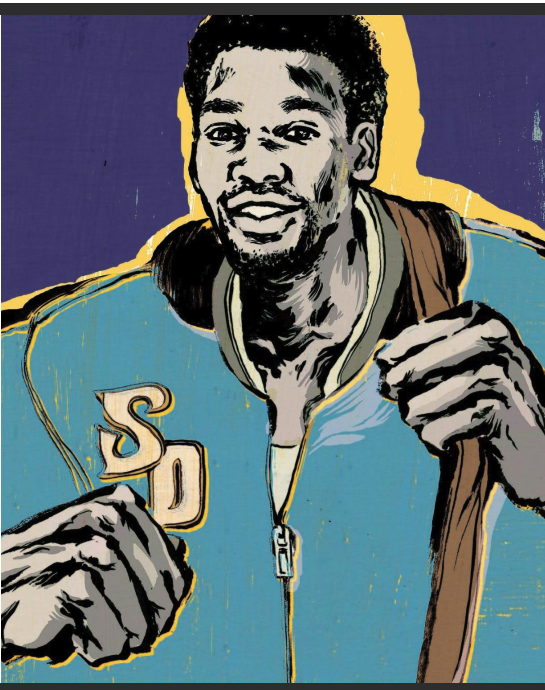

Leonardo Gyno Pomare Resume

Summary
Focused and reliable creator of digital applications. Highly effective
collaborator with a customer-focused approach to delivering high
functioning software solutions. Motivated ServiceNow
developer/Administrator with exceptional use of interpersonal skills
across cross-cultural teams, looking to leverage expansive Software
Engineering experience.
Education
UNIVERSITY OF SAN DIEGO
Major: Communication Studies
Work experience
-
GEICO, Poway, CA — Claims Service Representative DECEMBER 2021 -
DECEMBER 2022 Resourceful in investigating and determining coverage
issues within the company standards. Thoroughly investigates, problem
solves and resolves liability claims and clearly documents the next plan
of action through excellent communication to customers or other team
members.
-
GEICO, Poway, CA — Customer Service Representative DECEMBER 2020 -
DECEMBER 2021 Frontline support to customers by providing necessary
information for policyholders to ensure excellent customer service.
Managed high volume of work while resolving customer questions with a
positive attitude.
-
YMCA, San Diego, CA — Wellness Coach JULY 2019 - DECEMBER 2020 Empowered
individuals to make safe and effective choices in their lives.
-
Professional Athlete, Japan AUGUST 2004 - APRIL 2014 Cross cultural
collaborative adaptability. Excelled in an environment with a language
barrier while retaining those valuable skills today.
Skills
Tech Skills - HTML, CSS, JS, Ract, BootStrap, Node.js, Express, Mongo DD,
Mongoose, API, GIT, GITHUB, PostMan.
ServiceNow Skills - ITSM, Workflow Automation, Service Catalog Management,
Scripting and Customization, UI Builder, Integration, Instance
maintenance, System Administration, CMDB
My Hobbies
Contact Me